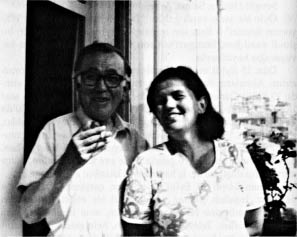

Sevgili Huriye, Selma, Ayşe,
Öyle bir şarkı vardı galiba: ”Bu son mektup ayıracak biliyorum ikimizi” – Bazı son mektuplar ayırmaz, kavuşturur; bu şimdi yazdığım, Stuttgart’tan son mektup, bir hafta sonra kavuşacağız hayırlısıyla.
Dün 13 Eylül tarihli, Kumburgaz damgalı mektuplarınızı aldım. Almaların da sonu geldi artık; uçak biletim de dün alındı: 23 Eylül Cumartesi Müftüoğlu firmasının işçi uçağıyla saat 18.30’da İstanbul’a uçacağım. Uçak Türkiye saatiyle 21:30’da Yeşilköy havaalanına varacakmış. Beni karşılamaya, çocuklar, siz gelmeyin, Huriye gelsin sade. Çünkü nasıl olsa gümrük muayenesi bitmeden sizi bırakmazlar salondan dışarı. Huriye, ben, üç valiz, biner bir taksiye geliriz. Hele eve kapağı atalım, bütçe durumunu düşünürüz. İş hayırlısıyla İstanbul’a gelmekte.
Alman Lisesi 20 Eylül’de açılıyor, çarşamba günü, öyle yazdınız. İnşallah çıkmaz ya, mecbûrî bir engel çıkarsa ben Nüzhetiye adresine bir telgraf çekerim, ama inşallah çıkmaz böyle bir durum. Televizyon yola çıktı, hele gelsin o da, gümrükten almasını, kurdurulmasını orda düşünürüz. Hayırlısı, o mesele de kapanmıştır.
Yeni ders yılına sağlam, sıhhatli girin, kış geliyor kış. Burda hava enikonu soğudu. Bana artık mektup yazmayın, üç günde geliyor, geçmeyebilir elime.
Az kaldı, bu da geçer. Gözlerinizden öperim. Ben gene yazarım.
B. N.

Beşiktaş, Nüzhetiye caddesindeki evinin balkonunda (Temmuz 1974).